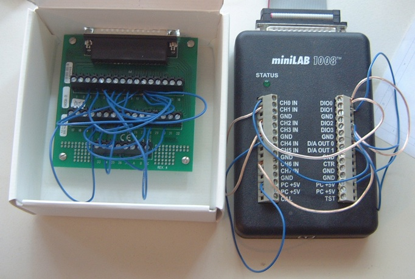

minilab is a Ruby library for communicating with Measurement Computing's miniLAB 1008 device.

A RubyGem for this library is available at the minilab Gemcutter page.
Source code is available at the minilab GitHub repository.
RDoc documentation is available here.